APL2000 (Berlin) Reports and Pictures
Vector 17:2, page 56
[The conference papers are available online at www.apl-online.de/Berlin2000/berlin.htm]
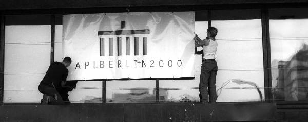
notes by Ian Clark, Anthony and Sylvia Camacho (collated by Stefano Lanzavechia). Pictures by Ray Cannon, Dieter Lattermann, Anthony Camacho & Adrian Smith
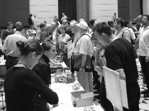
The conference took place in the centrally located Technical University of Berlin (TU). Delegates lodged in a number of hotels nearby (or in the Friends of Nature youth hostel not-so-nearby) and came in on foot or by Berlin’s excellent public transport system of U-bahn, S-bahn and bus.
The hub of the conference was the vast marble-colonnaded hall of the TU, which amply contained the conference desk, refreshments buffet (coffee and tea were permanently on tap), plenty of tables for consuming the same and the vendors’ exhibitions.
Talks took place in two large auditoriums nearby, mostly in two parallel sessions in addition to the series of workshops which took place in the Mathematics Building across the road, plus lunchtime vendor presentations by Causeway, Dyadic, IBM and Cognos.
Delegates were greeted on the first morning with handouts from the British APL Association (BAA), the latest issue of VECTOR and a CD with most of the conference papers in portable document format plus some giveaways. The BAA had offered a fair amount of behind-the-scenes support to make sure the conference was a success, but the German APL Association must be given credit for doing the real work. The organisers were pretty skilled at fitting a quart into a pint-pot – in spite of a full programme I never had the feeling of being hurried, whether over meals and coffee-breaks, or getting from one place to another.
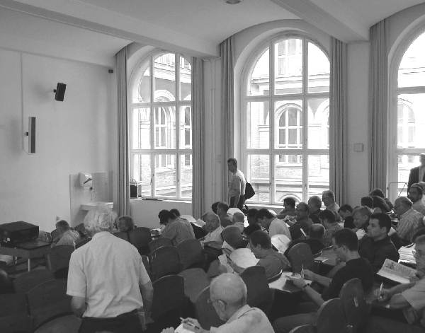
A nice touch was to put out piles of copies of the papers currently taking place, or hand these out in the auditorium itself, so you had the paper to refer to whilst listening to the talks (alas, not every speaker’s visuals were legible from the back of the auditorium.) The organising committee was always on-hand to help out with problems, and it seemed as though wherever I looked I could see Dieter and Dominika, busy as bees, slipping between the chattering groups sorting out some problem or other.
There was a distinct difference in culture between the presentations from former ‘western’ and ‘eastern bloc’ countries. The former were generally entertaining and made use of good quality visuals. The latter, alas, added little as a rule to the written paper which was already in the hands of the delegates in both printed and CD form. Often the text of the paper itself was what was projected onto the screen. There are probably several extenuating reasons for this, which may disappear in a few years as the former ‘east’ catches up, so to speak, in both quality and availability of resources. One cultural reason might be that speakers viewed the presentation as an onerous formality, the value of the conference to them having been largely for the social and personal contacts it afforded. Accordingly the objective of presenting their results to their peers had been met the instant their paper had appeared in the proceedings.
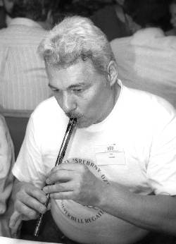
These papers it must be said were generally interesting, informative and in good to excellent English, a language in which the speakers themselves may not have had much practice in delivering presentations. Certainly nowhere near as much as the ‘westerners’, who were of course using their native language. There may also once upon a time have been a distinct disincentive to making good presentations by western standards: anything too easy to follow or suggestive of ‘light entertainment’ might have got your grant cut for trivialising the subject. One hopes that this reason has gone away by now and that the student graffiti on the auditorium desks which the reviewer had plenty of time to read (‘langweilig’ – boring – being a recurring word) are simply petroglyphs from a dead culture.
Back to the conference itself. As well as an extensive programme of cultural visits for spouses and other non-participants accompanying the delegates, there was something happening every night. Monday evening we gathered from the four quarters in the Cafe Filmbühne situated in nearby Steinplatz and there was much hailing of old acquaintances.
Tuesday evening was warm, if cloudy, and we took a trip along Berlin’s river Spree on one of the original 19th century riverboats, the ‘Fritz Zille’, enjoying a buffet supper washed down with plenty of beer (when it could at last be coaxed out of the cask) to the sounds of a barrel-organ capably cranked by the skipper.
Adrian and Carlo competed with their digital cameras to capture the Most Gorgeous Nose of APL 2000, whereas the accolade for the most gorgeous pair of legs must surely go to the Belle of the Ball, Alexei’s lovely daughter Masha, who stood out stunningly against the sombre ranks of us APL gnomes, unchained from our desks for a few mad summer days. (Sorry Lynne – but you did win the Ken Iverson Award for services to SigAPL!)
On Wednesday we boarded coaches for a trip to the ancient Citadel of Spandau, where we were treated to a mediaeval banquet plus a cabaret of horned pagan dancers with drums and German bagpipes (playing old Scottish tunes – shades of the McGinsbergs, of that ilk). The meat came in huge hunks which we carved ourselves, washed down with plenty of wine and great jugs of beer – they could have fed another two beanfeasts on our leftovers!
Dieter Lattermann, Conference Chairman |
If ample good food and good organisation are what is needed to make a conference go well, then APL-2000-Berlin couldn’t fail to succeed. When the conference wound-up on Thursday afternoon it was agreed by one and all that we’d had an excellent time, made several new friends and even learned a few APL tricks we might not have thought of, left to ourselves. [Ian Clark] [Editor’s note: what follows is a short summary of a selection of papers and talks presented at the conference as provided by Ian Clark unless otherwise indicated.] |
P.-M. Hager: Representation of ASN.1 in APL Nested Structures¶
Peter-Michael Hager, looking resplendent in a blue and yellow tie-dyed silk shirt which nicely set off his vivid red hair, had overheads which were photocopied from his paper. These were hard to read on the screen from the back, but whilst the talk was underway the photocopied paper was distributed to all listeners, which helped immensely. It made a nice keepsake, because it contained a fully worked example of the syntax and resulting sample APL nested structure of a signed X.509-standard certificate for net transmission, serving as a handy introduction to the syntax and usage of ASN.1 (Abstract Syntax Notation One). This, Peter-Michael asserted, was the standard for OSI (Open Systems Interconnection) and was used by several TCP/IP protocols and security applications. After presenting this worked example in detail, a good one for its varied content, which included name and address fields, the speaker finished by offering an ASN.1 syntax for an entire APL workspace in platform-independent form, something else one might well want to transmit down the wires from time to time.
M. Barghoorn: High Performance Computing through Parallel Processing¶
Martin came to this problem through having to write network tools for the extensive university system. He demonstrated a program which set up and managed a collection of shared variables using {each} and {execute-each}, thereby achieving a measure of parallel processing. This shortened the time in which, say, the disk-space usage of all workstations could be determined across the network.
J. Brown: What’s Wrong with APL2¶
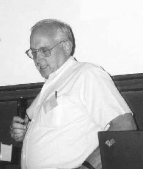
Jim Brown (after 31 years with IBM, now of Smart Arrays) told us that he may have deceived us by his title of “What’s wrong with APL2” into thinking that there was something wrong with it. What he actually did was recall some places where a different design decision would have been equally good or maybe even better and some places where a feature could have been added with advantage. If Jim could change two things in hindsight he would like (1) to have created the function library that Gary Bergquist is working on now and (2) to have called it , not “APL2”, but either APL version 2 (which would have persuaded more people to migrate) or by a completely new name – such as “Java”. [A. Camacho]R.G. Brown: Defining APL Community: Case Studies, towards a Revival of APL Community¶
The speaker, scorning hi-tech visuals by employing handwritten transparencies, gave two interesting potted histories of computer ‘communities’, which he defined as a group of people whose job it is to use the same sort of software. The idea was to discuss one ‘dead’ one, the LISP community (which died along with its main focus area, Artificial Intelligence), and one currently thriving one, the LINUX community, of which he is a leading light of a local group in Kalamazoo. These suggested a prescription of what might work to popularise APL better and to avoid the LISP pitfalls.
S.J. Halasz: An Improved Method for Creating Dynamic Web Forms Using APL¶
Steven described in broad terms work mainly done by Lingo Allegro for a Swiss customer, an existing APL user, to demonstrate the generation of dynamic web forms for their intranet. That is, the HTML defining the form is dynamically generated by the server, not written in fixed form. He described the advantages of various different approaches, discussing how (say) Cold Fusion and ISAP generate non-standard tags intended to be preprocessed, not to work the browser directly. A ‘visual’ editor such as Dreamweaver does not recognise these, so humble Notepad behaves better in practice. He argued for a ‘thin client’ rather than a ‘fat client’ which takes time to download a fair-sized lump of code on first access which the client needs to show the page. His preferred solution to the customer’s problem, which he called a Document Oriented Interface (DOI), retained part-complete, unsubmitted user input forms across sessions, maybe containing errors, rather than a transaction approach which would annoyingly discard user input if the session did not result in a complete and correct form being submitted. It relied on secure (re-)identification of the user to do this, which led to some discussion about achieving this.
T. Laurmaa: Avoiding the Pitfalls of Corporate Intranets¶
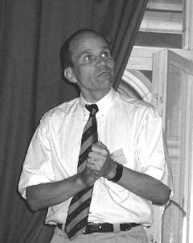
Timo began with a reminder that he often presents light-hearted papers but that the audience could know by the fact that he is wearing a tie that, on this occasion, the topic is serious! By intranet he means a corporate-wide network constituting a group with read write and delete access to corporate data and with both rights and responsibilities with reference to the data. A typical and often neglected responsibility is to clean-up the data they post when it becomes redundant. Also important, in the corporate context, is that they need a search engine that can answer the question “what should I know about today?” So, rather than create links to many documents from within one HTML page, we want to create links to one document from many HTML pages. The best person to look after the timeliness of data is the creator himself at the time of creation. It should therefore be arranged to assign life-cycle controls which will remove out of date documents and, just as important, out of date links. The solution described is based upon Dyalog APL/W. [S. Camacho]H. Ehrbar: Graph-theoretical Notation for Higher Dimensional Arrays¶
Hans Ehrbar is a mathematician turned economist who has developed a pictorial notation for arrays and would like to see its use extended. An array is shown as a tile with a number of arms corresponding to its rank. Joining tiles by connecting an arm of one to an arm of the other produces a new representation with the joined arms excluded from the dimensionality. He showed how to use the notation to represent Einstein’s summation convention, Hadamard and Kronecker products and how to handle commutation matrices and matrix differentiation. [A. Camacho]
A. Karabanov: Dyalog-APL Application with Threads on the Base of ActiveX Data Objects¶
The talk was re-titled: ‘Use of multithreading features of Dyalog APL for development of database applications’. Co-author Günther Roche gave the talk in a clear voice, with well-designed Powerpoint slides, surviving (with session leader Peter Donnelly’s help) not a little aggro from the Russian contingent, who were not convinced that his demonstration really did exhibit multi-threading, or its advantages if it did. But the aim of the two main experimental techniques were clear and simple, to avoid the database accessing program waiting in an idle state whilst the database processed its enquiry. To do this they relied upon Dyalog APL’s multi-threading capability to permit the enquiring algorithm to continue asynchronously, doing useful work, pending the reply from the database. Thus, ‘useful work’ might be to process the result of the previous enquiry. Various strategies of slicing up the problem, e.g. by batching up enquiries, were under investigation. Günther actually demonstrated two examples of an APL program communicating via ADO with a database, employing Dyalog’s approach to ADO (ActiveX Data Objects), which Microsoft now recommends in preference to OLE for all purposes. This approach generates the 3 kinds of data objects specified by ADO, ‘Command’, ‘Connection’ and ‘Recordset’, by applying these words as left (‘type’) arguments to a ⎕WC statement, thereby generating the sets as namespaces. The reviewer detects a welcome trend to converge the syntax of creating and updating Dyalog namespaces and GUI objects, in spite of their differing origins. Whence might this lead? To being able to assign any nameclass 9 object to an APL identifier? To an ever-increasing overlap between the functionality of ⎕ns and ⎕wc/⎕ws/⎕wg? Even maybe to introducing a new migration level (oh, no! – not another ⎕ML value!) at which GUI attributes become variables in the namespace (shades of Visual Basic!)? Could you then assign the values of some attributes of GUI1 to GUI2 and not others by an APL-like syntax instead of some clumsy nesting of ⎕WG in ⎕WS? Clearly this reviewer is letting his imagination run riot, as the denizens of Basingstoke will hasten to agree. [Editor’s note: actually the reviewer is being prophetic since Dyalog APL version 9 provides exactly the kind of functionality imagined.]
R.L.W. Brown: Interest Made Simple with Arrays¶
Richard Brown (of York University, Toronto) showed that there are many problems in simple interest which become really tedious if you try to solve them with a calculator. He went through several examples of increasing complexity and showed how concisely they could be solved by simple expressions in J. He suggested that we wouldn’t really appreciate the benefits of his methods unless we have tried to do the examples on a financial calculator and on a standard spreadsheet. Some of the things he did would be really difficult to do without the J facility for performing the inverse of a function. Then he showed how, by a simple substitution, the simple interest formula could be replaced by the compound interest formula in all the examples. [A. Camacho]
D. Sengenleitner: GERVA (Secure Electronic Legal Communication with Attributes)¶
GERVA provides IT services for lawyers and accountants specialising in tax affairs and their clients. Hitherto lack of security has meant that users hesitate to send legal documents by email. Dietmar commenced with a cartoon captioned: ‘On the internet nobody knows you’re a dog’. He reviewed European law on digital signatures, and described DATEV’s Trust Centre, which issues the smartcards and PINs. With a smartcard you can sign a document and encrypt it to be read only by selected subscribers. The smartcard is inserted into a reader connected to a Windows 9x or NT system via the serial port. DATEV’s system, GERVA (Gesicherter Elektronischer RechtsVerkehr mit Attributen – Secure Electronic Legal Communication with Attributes) is implemented in Dyalog APL. It is being field-tested with 580 participants from several organisations. Dietmar demonstrated the system in use with MS Outlook. During questions from the floor it appeared that GERVA complies with European standards, rather than the de facto ‘standard’ shared by four USA security packages. Like standard cash-cards there seems to be no provision in DATEV yet to warn against use of the smartcard under duress. The common way to protect against this is to have not one but two passwords, the second password appearing to behave exactly like the normal password but signalling a covert warning at the control centre (the DATEV Trust Centre it would have to be in this case.) ‘Common’ though it is, this reviewer is not convinced of its psychology. If suitably blood-curdling threats were employed, would even the coolest user under duress really dare give the alarm password? It sounds like one of those features put in to fulfil a popular checklist of security features, rather than one which would stand being put to the test (remember what happened to the over-heroic detective in ‘The Firm’).
M. Guazzo (discussion): APL and On Line Analytical Processing (OLAP)¶
Mauro Guazzo led this discussion about OLAP, which he defined as: response to unanticipated requests in a short time. The term OLAP, he said, came in around 1993 as a replacement term for Decision Support Systems (DSS). APL offers hypercubes to the problem, but he was not convinced that APL was the whole solution. In practice he himself used APL with customers only as a customisation tool of last resort. Could the APL community cooperate in identifying and researching the problems? – he asked. He invited participants to identify themselves if they had undertaken significant work in OLAP and to say what for them were the chief problems. Which they did (most of the erstwhile Adaytum developers were there!) He also asked where current APLs were considered to fall down over OLAP. This is the gist of the main issues raised.
- Data model is some sort of hypercube, but a sparse one, or even one splitting into disjoint subcubes.
- Trade-off between flexibility and protection (of the user against himself).
- Missing values, or values too small to show. How infinitesimals can propagate, leading to unequal cells containing zero (effectively).
⎕CTis not the whole answer. - Representation of time-series, and totalling/aggregation.
- Relational approach is only procedural – when you get nearer the application you need OLAP.
- Relational approach falls down with time-series.
- Dimensions need classifying, e.g. the time dimension.
- Time series inherently requires aggregation (and in conflicting ways: e.g. summing over weeks, months, tax-years). Is this any different from, say, the nesting of regions? – argued Mauro. The reviewer thinks it is, because of the inherent time-ordering whatever split into time-intervals happens to be chosen, e.g. days, weeks, months, quarters, or Western dates vs. the Islamic lunar-based calendar. A ‘regional’ model in which relationships like ‘within’ ‘to the east of’ and ‘overlaps with’ are to be represented, might just begin to exhibit some of the special problems encountered with time dimensions.
- Because of the extensive need to flag array cells in one way or another, leading to a proliferation of Boolean arrays, many of which need saving across sessions, APL needs effective sparse Boolean matrix handling. J has got it, but it generally needs to be smart (and problem-specific) to be successful.
T. Otto: An APL Compiler¶
Using some refreshingly clear Powerpoint slides of APL and C examples, Tilman described the detail of his APL compiler (called APL2C) for generating C code from APL. The approach he chose was to write an entire APL language processor in ISO standard C, described as APL2-like, with a system function APL2C which generates C source. This allows APL code to call C functions directly and vice versa. The reason he wrote it might be described as socio-organisational. The organisation was only happy with C code, but he wanted to solve his medical imaging problems in APL (see below). The solution? Simply write your own APL interpreter in C. Hats off to him! The result could be more generally useful for the APL expert/software developer but, alas, the compiler is not for sale. One nice feature, a bonus of writing your own APL interpreter, is that you can put the APL symbols on the session manager toolbar (or even just the ones you have most difficulty finding on the keyboard). Such an obvious trick in hindsight. Sample tests: Complex visual image processor, 106 fns, 1690 lines incl. comments {symbol 224 \f "Wingdings" \s 10|} 28,000 lines of C (with embedded comments). Performance tests show that the savings by converting the application from APL to C are attributable just to the APL interpretation overhead.
T. Otto: APL Based Medical Image Analysis¶
Tilman used his own APL2C interpreter/code generator (which he had already presented in a separate paper, see above) to perform filtering, averaging and animation on medical images of the human retina. He showed some impressive slides of the result.
A. Skomorokhov: One Knowledge Discovery Method. APL Implementation and Application¶
Before the speaker began, the projector showed his desktop: a photo of a supine cat. He was asked from the audience if this was Schroedinger’s Cat, but dodged the implicit issue of whether it was dead or just sleeping. Abandoning his pixillated Powerpoint slides, he reverted to a WORD image of his paper. This offered an algorithm to infer ‘rules’ (complex logical predicates) from repeated tests on data, using a simple table of (non-nuclear) sample data as an example (sex, income, colour). Problems with the APL font in WORD led to him loading the workspace and attempting to run the example by hand. The speaker had applied his methods to investigating the corrosion rates of various kinds of steel in liquid sodium for the nuclear industry, alerting the engineers to rule parameters they had not considered. The implied agenda is of course to avoid a follow-on from the people who brought you Chernobyl.
A.D. Mayer & A.M. Sykes: GrAPL - A High-Level Statistical Graphics Prototype Language¶
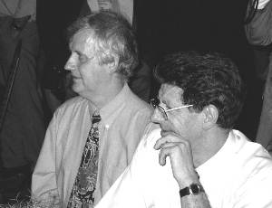
In a sense, this was yet-another RainPro interface, but one which the speakers from the University of Wales made a good case for being needed in academic statistical investigations. The existing RainPro interface can be described as ‘GDDM-like’ – a series of separate calls to the package sets up the desired graph and a final one gives the command to draw. GrAPL crams all the ‘relevant’ parameterising information into a single APL call. The trick of course is to do this without weighing down the syntax with parameters you’d rather not have to specify at this stage. The reviewer has seen a long succession of imaginative solutions to this problem ever since he worked on improving the unsatisfactory human factors of the GDDM Chart Utility when it first came out in 1980 or thereabouts. To say that the last word on this perennial topic has yet to be spoken is not to detract from the authors’ achievement. Like many an interface to an advanced general-purpose product, there may be no ‘ideal’ syntax to support all the product’s tasks in all environments – it’s a case of ‘horses for courses’. What excited this reviewer was how the speaker clearly showed his horse jumping its fences.M. Alfonseca: Artificial Life Evolution in a Simplified APL2 Environment¶
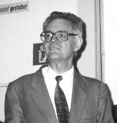
The whole topic of Artificial Life is a bit like ‘crystallised humanity’ to Mephistopeles in Goethe’s Faust. The longer you live the more you feel you’ve seen it all before. However this does less than justice to the author’s paper. The purpose of model-making on this tiny scale is to exhibit interesting phenomena in the classroom to students who might expect it only in living systems, with all their overwhelming complexity. This is one more example to add to the burgeoning field of Genetic Algorithms, in which an ‘organism’ is improved (i.e. the task it performs is optimised) by breeding it with variations (or mutations). The organism can take a variety of forms, e.g. one early investigator actually used a Von Neumann Games Theory payoff matrix for the game of Poker, simplified of course, ‘bred’ the organisms in an elementary Mendelian sexual way and played the results off against each other at each generation. After 12 or so generations, the ‘optimal’ payoff matrix evolved (Games Theory of course uses the minimax process for deriving the optimal matrix in a wholly different way.) The choice of task for the organism was original, the sex-like mechanism wasn’t. Nor was it intended to be, because the choice of breeding mechanism was seen just as a way of converging faster on the optimum solution. In the speaker’s case the organism was a midget program in a ‘toy’ machine-code specialised to the purpose of self-replication. So the task to be optimised and the breeding process were one and the same, which seems to be the main claim to originality. One might then expect completely novel breeding processes to arise, which is what happened. Another thing that happened was that a given ‘type’ of organism appeared, went extinct and then re-appeared. The reviewer suspects that this is an artifact of the tiny scale of the model, which reduces the organism’s variety (in the Ross Ashby sense). The reviewer doesn’t believe in the slightest, for instance, that if humanity became extinct it would essentially re-evolve given sufficient time. (‘It’s humanity, Jim, but not as we know it!’)E. Juvonen : The Making of a Conference – APL 92 in St Petersburg, Russia¶
Erkki Juvonen’s account was fascinating. He chose to hang the presentation on an idiosyncratic selection of the places where the project could have been torpedoed. (For example the janitor of the Danish Embassy in Moscow might not have helped to get the missing signatures on Andrei and Olga Kondrashev’s visas.) He arranged these critical events as the lines in a function, numbered accordingly. [A. Camacho]
D. Baronet: Introduction to Tree Searching¶
Daniel Baronet presented, in a model of clear concise exposition, an introduction to trees and tree searching. The motto was (1) check for solutions and generate new branches (2) search each one of them (recursive process). He then followed this advice to generate permutations of three letters and then to generate permutations of the sums of numbers (such as one has to do when allocating cash to invoice items) and in this example showed how to reduce the number of permutations to be searched. He then used the same techniques to solve the eight queens problem and the knight’s tour problem. These last two examples enabled him to show how careful one must be to choose an approach that doesn’t do unnecessary work. Finally he showed a program for three-dimensional noughts and crosses (tic tac toe) which he said had not been beaten if allowed to take the first move. Some of the programs are on the CD – the 3d tic tac toe in versions for Dyalog, APL+Win, APL*PLUS/PC and J. They look well worth exploring. [A. Camacho]
A. Smith: Redistribution of Totals through Hierarchical Data¶
Adrian Smith raised the problem that, in some circumstances such as budgeting, one wants to be able to alter a total and have the alteration spread among the items adding to the total so that the sum exactly equals the new total. If you want to reduce the vector 4 3 2 5 (=14) to add to 13 then multiplying by thirteen fourteenths and rounding will leave everything unchanged. Phil Benkard solved the problem in his paper ‘Dance of the rounds’ given at Stanford in APL 91. The method that Adrian recommended was to apply the prorating to the plus-scan of the items and then take the first difference of the prorated scan. The result is always correct, it is very fast and easily extends to higher dimensions. Then Adrian raised the problem of updating the annual budget three months into the year. The first three columns are now actuals and cannot be changed so the prorating has to be done on the remaining nine. This is how the budgets for the later parts of the planning year can get to be more and more unrealistic as the year goes by. The example function he gave can easily be amended to ‘hold’ any of the data and forces any changes to be spread among the data not ‘held’. A budget is often held as a table or higher rank array in which the row, column, plane &c totals are significant. In Adrian’s system it makes a difference to the result whether one rounds across or down or throughout the ravelled table. Questioners suggested that there were, in some cases, better and worse rules for allocating the items to be increased or decreased above or below what the simple rounding would achieve. In particular it may be better, if one of the values with a prorated fractional part of less than .5 has to be rounded up then it should be the largest one (the error in that value will be a smaller proportion of the value) or perhaps the value with the largest of the sub .5 fractions should be the one to round up. Adrian admitted that the method he had chosen was, in effect, a random choice of item to be increased or decreased yet maintained that the advantages of speed and simplicity made his choice the best. [A. Camacho]
M. Symes: An Interface between Java and APL¶
Mike gave a brief review of the similarities between Java and APL, for instance both are interpreted and both have an execute string instruction which allows each to initiate actions in the other. On the other hand Java uses very strong typing and APL is almost type free while Java, unlike APL, has no scalar extension. This is a very ‘meaty’ paper with many examples of interface code and descriptions of the various technical issues to be addressed. [S. Camacho]
R. Brown: J in Your Pocket¶
Richard Brown demonstrated a Casio E115 palmtop computer running CE on which J had been implemented. Entry was by means of a stylus with which you pressed the letters on a picture of a keyboard on the lower part of the screen. Martin Nietzel did the first port. The basic machine has a rather limited memory but you can add flash cards up to 64 megabytes which, although slower than memory seem as fast as a hard disk. The new version of Windows CE is called PocketPC. The professional version (non-commercial use) of J is free for this kind of device and the screen has a high enough resolution to display quite complex graphs. As Eric Iverson says, “If you need a really serious pocket calculator there’s nothing to touch it”. NEC, Sharp and HP also make palm top computers with similar facilities. [A. Camacho]
I. Clark: The ‘Killer App’: How to Make Millions with an APL Product¶
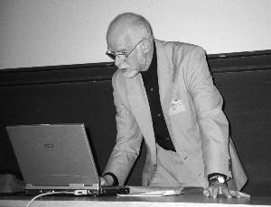
Another plenary session was the highlight of the conference: Ian Clark told us how to make millions with an APL product. His talk was largely about how to choose the Killer Application with hints on how to avoid numerous pitfalls in the exploitation of an idea. The Killer App took the fancy of the delegates and the idea appeared in many of the later presentations. Ian produced more epigrams in fifty minutes than the rest of the conference could manage in a day. The audience went away laughing, stimulated and happy in the thought of the riches to come. [A. Camacho]The Workshops and Tutorials [Adrian Smith]¶
I suppose the workshops are the hardest thing to set up, and in some ways were the least successful of the mainstream events in Berlin. They were held in the Maths building, as this was the nearest place where there was access to a room full of computers. In fact the computers were so thoroughly student-proofed that there was no possibility of installing an APL font on any of the desktops, so all the sessions were actually ‘talk and chalk’ mode rather than true hands-on events. The other problem with the Maths building was that it lay across a busy main road, and once inside it was no trivial challenge to navigate to the correct room ...
... although the architecture was pretty impressive along the way!
The main attraction was again the run of Dyadic workshops (you can read Pete Donnelly’s notes in full on the following pages)
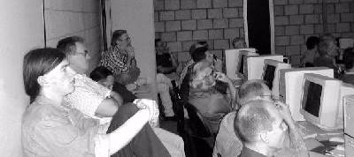
fswhich were well oversubscribed, as you can see here. This also shows that the computers were simply an impediment, and were mostly turned off to keep the heat and noise down. This also deterred all but the most anti-social delegates from using the session as an opportunity to check and answer emails! Unfortunately the computers were more than capable of surfing the internet, which is something else that organisers of future conferences should look out for.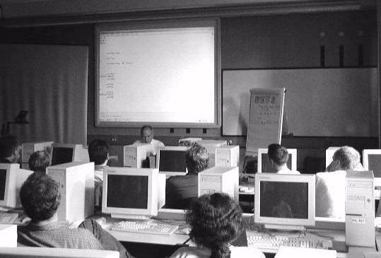
John Scholes, but not a Duck in Sight!
Having said all that, I should finish with the comment that the Dyadic seminars were very well presented, the material was interesting, and the audience as attentive as you can be in a hot dark room after a good lunch.
... and the reciprocal of pi to your dear wife ...
[We have some more pictures from the Conference]